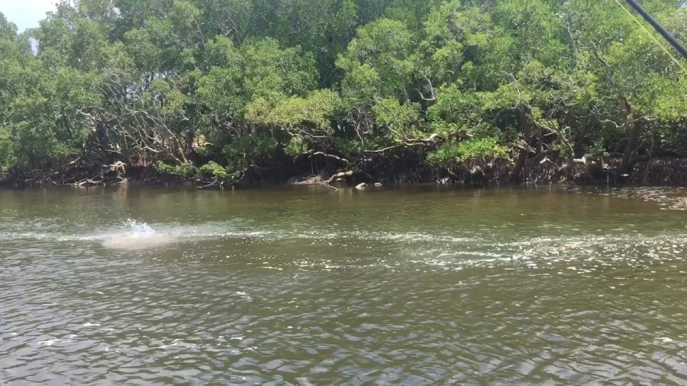

What you'll catch
From 21 segments across the archive.
Fast, aerial and everywhere in the dry. Every quote below is from a real segment — follow it through for the audio and the full transcript.
When was that early last week? and yeah, heaps of queenfish and tuna and stuff carrying on.
Bag a Barra — 17 July 2026 Bag a Barra, Oz Off Road Radio
You wind it back in really fast and Trevelli and queenfish and sharks just loved it over in the Kimberleys back in 2011 when I created it.
Fishing on Arvos — 8 July 2026 Fishing on Arvos
I was one of those families when I was a kid, you know, and you remember those guys who give you that experience and catch a 1st mug crab or a 1st barrel, a gold snapper, queenfish, whatever.
Guys in the Gulf — Ep 046 Guys in the Gulf
So they really hate them and they perhaps prefer to catch a queenfish or a traveller or something.
Fishing on Arvos — 18 February 2026 Fishing on Arvos
We might go see if we can get you in front of a saltwater barrel, one of those big queenfish in Darwin Arden, maybe.
Bag a Barra — 12 December 2025 Bag a Barra, Oz Off Road Radio
So we're going to try that and we've had a good morning chasing some queenfish and Trevellia stuff around so far.
Bag a Barra — 3 October 2025 Bag a Barra, Oz Off Road Radio
So, we're heading up to the islands now where we should be able to get him some Trevelyan queenfish and other bits and pieces as the tide pushes over the rocks.
Bag a Barra — 19 September 2025 Bag a Barra, Oz Off Road Radio
Through the dry season, there are almost always tuna, mackerel, queenfish, and travally, feeding somewhere in this wide expanse of green water.
Finding fish in Darwin Harbour Starlo Gets Reel
Although, I do know that, um, you know, queenfish, Trevally, mackerel, and tuna, and all those sort of cooler water species are in the harbour, and buy them pretty well, when it's not too choppy to be sort of blasting around after them.
Bag a Barra — 4 July 2025 Bag a Barra, Oz Off Road Radio
A fast moving mixture of small mackerel and queenfish busting up on bake fish. This should be fun, if we can get a fly in front of them, and then move it fast enough to elicit a feeding response.
Darwin's best kept fishing secrets Starlo Gets Reel
The barrel pretty busy this morning and what else do we get? Queenfish, golden snappers and cod, all sorts, yeah, javelin fish as well, mackerel.
Bag a Barra — 24 November 2023 Bag a Barra, Oz Off Road Radio
We were back in Darwin Harbour fishing for mackerel and uh Trevally and queenfish and stuff and there was a couple of fellows out there chasing um bait schools around on jet skis and having a good time.
Bag a Barra — 20 October 2023 Bag a Barra, Oz Off Road Radio
It's a massive estuary system, around eight times the size of Sydney Harbour, and our number one target in here is Barra, primarily, but we also got all the other tropical sport fish species like mangrove, jacks, Queenfish, and Torelli.
Fishing for barramundi in the Top End Fishing Addiction
Um, then your favourite corrobery Billabong, then Dundee Beach, then 3 days at Bino Harbour, and then what'd we do after that? Oh, Vernon Islands for the big G GTs and Queenfish on the last day.
Bag a Barra — 2 September 2022 Bag a Barra, Oz Off Road Radio
But we've been doing the sort of light tackle extra fishing and the Trevalli and Queenfish and some really good golden snapper, biding there, and in the golden Trevalli, which we spoke about last week as well as the um, the barrow that, you know, we're trying to catch and um, and get that tagged fish.
Bag a Barra — 10 December 2021 Bag a Barra, Oz Off Road Radio
Uh, for our um, for our barrow fishing site casting and then Queenfish and Tramale and all the other things go along with it.
Bag a Barra — 16 July 2021 Bag a Barra, Oz Off Road Radio
So 1st few tides after the half moon, we'll be out there chasing the long tails and queenfish around up on the reefs where when it's nice and clean.
The Intermediate Line — Ep 80 The Intermediate Line
I do the odd Facebook live in amongst that sort of stuff and we're catching some big queenfish and um big Trevelli out there.
Bag a Barra — 4 September 2020 Bag a Barra, Oz Off Road Radio
Yeah, people have never experienced the thrill that you get from the style of fishing, number one, that you do for queenfish, but also just how sort of hard they pull and you often have 3 or 4 hooked up at once, and it's chaos, and I sit back and laugh.
The Segment — Glenn Watt, Barefoot Fishing Safaris The SegmeNT
So, if the barr aren't playing the game, you can figure that out pretty quickly and then just head out into the middle of the harbour and find some, find a bit of current or a bit of um, structure and you can, it's pretty easy to find some queenfish or travelly or tuna or mackerel in there as well.
Bag a Barra — 26 June 2020 Bag a Barra, Oz Off Road Radio
It does, you know, you can walk into a tackle shop and there's 10,000 rods and you can get pretty confused, but basically, like in a nutshell, duck, what we're doing up here with our barrow, particularly the casting and our, I guess our light, um, light tackle, sort of pelagic stuff with the queenfish and Trevally and that as well.
Bag a Barra — 1 May 2020 Bag a Barra, Oz Off Road Radio